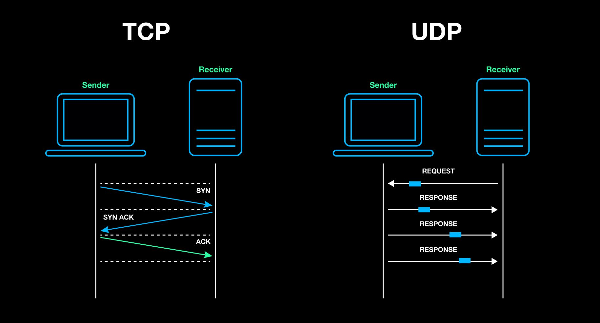

A handshake is the process by which two devices establish a connection and agree to communicate before data transmission can begin. It is a three-step process in whcih the source device (your computer, for example) makes a request for a connection, the destination device acknowledges the request, and finally, the source device confirms the acknowledgment. Acknowledgements are messages sent by the receiving device responding to confirm that data or connection requests were successfully received. For instance, suppose a user wants to enter an online chat room. Once the chat application asks TCP to establish a connection:
- TCP sends a connection request to the destination host, typically a server
- The server sends an acknowledement that the request has been received
- The source device confirms the the acknowledement, completing the connection so that data transmission can begin
A server is just a host -- a computer or device connected to the network -- that runs software designed to provide services to other devices (in this case, a computer that has the chat server software)
